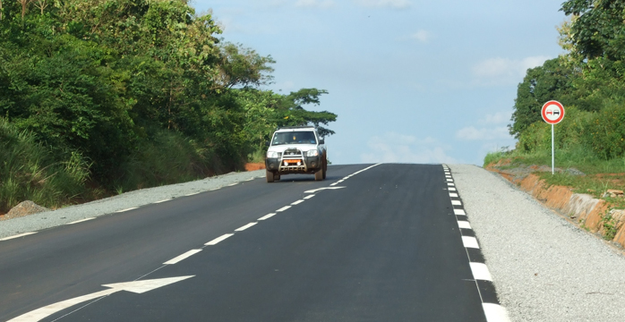
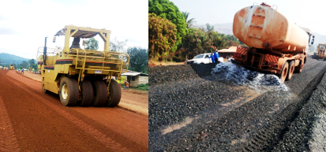

ECTA-Sarl BTP (Etablissement des Camerounais Associés en Techniciens Bâtiments et Travaux publics), Société Camerounaise d'Ingénierie, en 1989 Fondée, is un Bureau d'Etudes Techniques indépendant
- Etudes générales Le : faisabilité, montage des Dossiers d'appel d'offres, schémas directeurs;
- Etudes techniques et maîtrise d'œuvre complète;
- Évaluation de projets;
- Techniques de vérifications;
- Etudes d'impacts économique, et sociale environnemental.
Certifié Iso 9001: 2008 en 2010, ECTA-Sarl BTP demeure à ce jour le Bureau d'techniques seul des Études de droit camerounais certifié.
Recents Projets
ET DES CONTROLE DE SURVEILLANCE TRAVAUX DE LA ROUTE DE bitumage NDOP - Kumbo . This itinéraire de 60,5 longue Neuve fait partie des Km 360 km de la «Ring Road» dépend 06 des 07 chefs-lieux des départements la région du Nord-Ouest. 